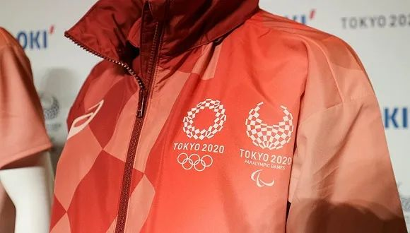

东京奥运会因疫情延期史上首次，日本政府已投入126亿美元
原文链接 备份链接 国际奥委会关注的核心问题 首先是运动员的健康 其次是商业因素 央视客户端消息称，据《今日美国》报道，据资深国际奥委会委员迪克·庞德当地时间23日透露，2020年东京奥运会将推迟至2021年，而有关细节将在未来四周内 …

记者：刘雨静
“
授权厂商和网友的反应不一。
”
如果东京奥运会延期到2021年举办，那些写着“TOKYO 2020”的商品还能不能卖出去？
这是日本奥运会周边生产商和东京奥组委面临的新问题。3月24日，国际奥委会与东京奥组委联合宣布，东京奥运会延期到2020年后且不晚于2021年夏天举行，东京奥运会由此成为现代奥运124年历史上第一个延期举办的奥运会。
但此后各个问题接踵而至——比如那些为东京奥运会生产周边商品的厂家当下最大的担忧便是：标有2020字样的周边和logo是否需要重新设计，以及周边可能存在的销售波动状况。
 写着2020年标识的周边
写着2020年标识的周边
3月24日晚间，东京奥运会官方商品店铺网站一度瘫痪。网页显示“店铺出现故障，暂时无法使用”的字样。
 官方商品页面瘫痪截图
官方商品页面瘫痪截图
东京奥运会官方店铺显示，几乎所有官方及授权生产的奥运商品，从奥运旗帜、水杯到纯金纪念币和品牌联名手表，上面都印有“TOKYO 2020”的标识。尽管目前已经确认2021年举办的东京奥运会和残奥会均将仍然沿用“东京2020”的称呼，但并不是所有消费者都会因此对周边商品也买账。
在日本推特中，有一些人认为，如果东京奥运会延期到2021年举办，那么这些周边上的“2020年”便毫无实际意义，“像活在想象中的、从没存在过的奥运会”，有人写道；但也有不少人认为这些周边因为特殊而升值，“考虑到100年后可以转卖从未存在过的东京2020年奥运会周边，我买了一堆屯着”，有人开玩笑称。
东京奥运会的授权厂商也心情复杂。位于东京的授权生产商负责人安堵对朝日新闻表示，听到沿用东京2020的消息时，他们松了一口气。过去的2-3周间，这些授权生产商们茶余饭后的话题都是东京2020的走向，“但我们什么也不能做，只能等着，继续生产那些发来的周边商品订单。”
 东京奥运会的周边服饰
东京奥运会的周边服饰
界面新闻查询显示，东京奥运会的周边商品的授权生产、销售，几乎均由日本本土公司负责，不少是日本地方城市的老牌企业。比如奥运会旗帜的授权生产方为1937年成立的东京制旗株式会社，毛巾类产品授权给1966年创业的名古屋丸真株式会社，皮革类制品授权合作方为株式会社守屋。
这么做也有振兴日本地方经济、帮助地方创收的考量。与本土企业合作一方面能增加企业订单量，此外也能藉由这种国际比赛将日本特色商品展示给全球。早前1964年的东京奥运会是日本经济腾飞的重要契机，由此日本的基础设施建设、轨道交通和旅游、制造业都得到了迅猛发展；而本次，日本也很大程度上寄希望于利用东京奥运会复苏经济，特别是旅游、交通和零售业。
此外界面新闻了解到，由于版权原因，过去曾帮欧冠、里约奥运会制作相关商品的中国义乌工厂，本次并未参与东京奥运会相关商品的代工与制造中。
未经授权 禁止转载

原文链接 备份链接 国际奥委会关注的核心问题 首先是运动员的健康 其次是商业因素 央视客户端消息称，据《今日美国》报道，据资深国际奥委会委员迪克·庞德当地时间23日透露，2020年东京奥运会将推迟至2021年，而有关细节将在未来四周内 …
原文链接 备份链接 【财新网】（驻东京记者 陈立雄）3月9日，受新冠疫情对全球市场信心带来的冲击，日经指数大跌1050.99点，跌幅达5.07%，收于19698.76点，达1年2个月以来的新低，还跌破了2万元的关卡。日经盘中最多一度下跌 …
原文链接 备份链接 图片来源：视觉中国 记者：罗盈盈 “ 日本政府和东京奥组委依然致力于让奥运会如期举行。 ” 受全球疫情影响，东京奥运会能否如期举办的悬念仍在持续。 3月3日，据英国《每日邮报》报道，日本奥运大臣桥本圣子在回答一名议员关 …
原文链接 备份链接 据央视新闻，3日，就有关新冠肺炎疫情是否会导致今夏东京奥运会取消这一问题，日本奥运大臣桥本圣子公开表示，“协议要求奥运会在2020年内举行，这可以解释为允许推迟到年底举行。” 桥本圣子表示，根据相关协议，推迟或取消奥运 …
原文链接 备份链接 图片来源：视觉中国 记者：罗盈盈 “ 如果日本当地疫情在今年5月底无法得到有效控制，这届奥运会有可能会被取消。 ” 即使日本新冠肺炎疫情持续蔓延，当地官员、东京奥组委以及国际奥委会早前多次强调，东京奥运会准时举办。 但 …